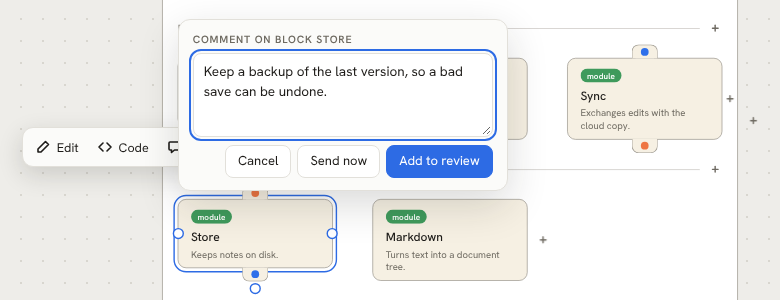
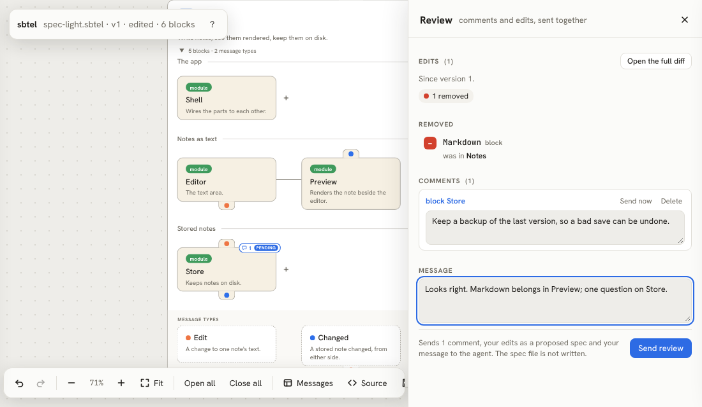
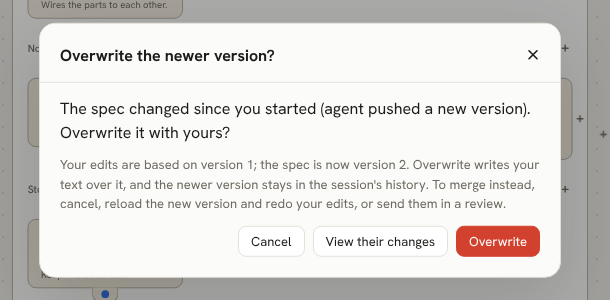
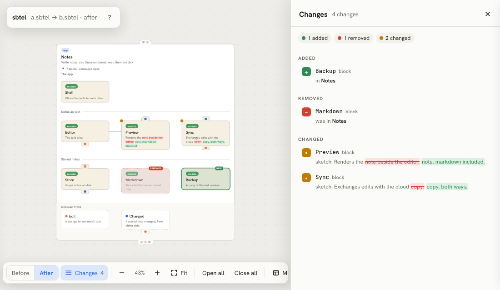
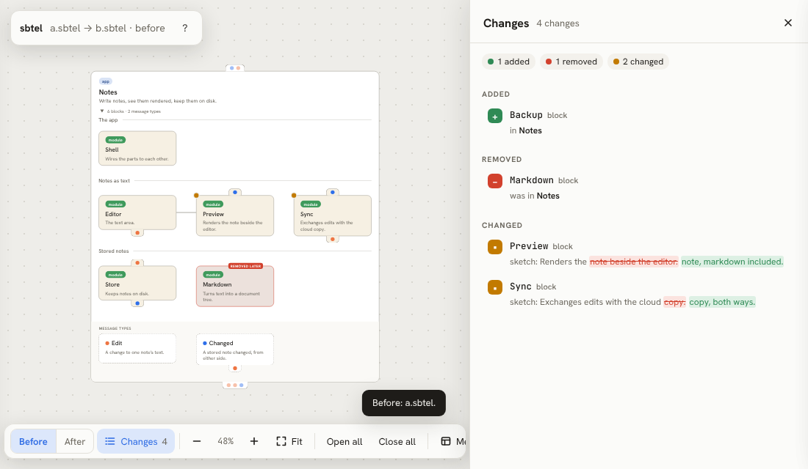

The viewer
The viewer is where you and your agent look at the same picture. In the playground it edits a spec in your browser; opened by sbtel open, it is how you review your agent’s design. Every diagram on this page is the real viewer: click one to use it.
Reading the picture
- Cards
- A card is a block. A card that holds levels is a container; its triangle opens and closes it. A pill shows
:type. - Level names
- Each level’s name sits on the line above it. Point at it to read the level’s sketch.
- Ears
- Dots on a card’s top ear are its inputs; on the bottom ear, its outputs. A dot’s colour is its message type.
- Drawers
- Click an ear to open its drawer: one row per port, with its name and type.
- Callouts
- Point at anything with a sketch, a port, a level name or an adjacency line, and its sketch shows at once, beside it.
- Partners
- Point at a port in a drawer and every block it can talk to is outlined in the type’s colour.
- Data flow
- Point at a message type, its card, a chip or a dot, and every type that carries it is outlined, with every block whose ports use one.
- Behaviors
- Point at a behavior and its implementers are outlined, labelled “implements”.
changed; then point at the Edit type in the band at the bottom.Editing
The picture is the spec: every edit rewrites the text, and you can always see it in the playground’s Source panel.
- Ports
- Click a port’s row to edit its name, direction, type and sketch in place. Inherited ports open read-only, with a link to where they are declared.
- Levels and sketches
- Click a level’s name, or an adjacency line, to edit the name and sketch. An unnamed level offers “Name this level”.
- The Edit dialog
- Select a card and choose Edit: name, type, sketch, ports and behaviors, in one place.
- Linking
- Drag one of a selected block’s handles onto a block in the same level to make them adjacent.
- Deleting
- Select a block or a line and press Delete.
- Undo
- ⌘Z and ⌘⇧Z, or the arrows in the toolbar. The history is kept per spec, in your browser.
chord row in Palette’s drawer and rename it. Click “Services” to give the level a sketch. Select Keymap, press Delete, then undo.Dragging
Drag a block and every place it may go becomes a drop zone. The viewer works out each candidate edit before you drop, and lays it out for real, so what you see while dragging is what you get. Drop between two linked blocks to join their group.
A drop that would break the spec’s scope rules is drawn in the warning colour. Drop it anyway and the block bounces back, with a toast that says why.
CardToken is out of scope, so it bounces.Attaching
Hold Shift while you drag a declaration to attach it instead of moving it: a behavior onto a block, which then implements it, or a message type onto an ear, which adds a port of that type.
Changed type onto Editor’s top ear.On a phone
- Pan and zoom
- One finger pans, even on a card; pinch to zoom.
- Move a block
- Tap it to select it, then drag it.
- Menu
- Long-press anything for the menu a right-click opens on a computer.
- Callouts
- Tap a port, a level name or a line to pin its callout. Its Edit button opens the editor.
With your agent
When your agent runs sbtel open spec.sbtel, the viewer opens as a session. You comment and edit, and send it all as one review; the agent reads it with sbtel inbox and pushes a new version to the same tab. These views need that session, so they are pictures here.
Comments
Select a block and press Comment, or ⌘-click it. Add to review keeps the comment in your draft; Send now sends it to the agent at once.

The review
Review (N) in the toolbar counts your pending comments and edits. The panel lists your edits as a change list, your comments, and a box for an overall message. Send review sends them as one; it never writes the spec file. Your edits reach the agent as a proposed spec.

Saving, and conflicts
Save (⌘S) writes your text to the file directly. If the agent pushed a version since you started, the viewer asks before overwriting it, and can show you their changes first. It never overwrites silently.

Diffs
sbtel open-diff a.sbtel b.sbtel shows what changed in one picture. Added parts are green, removed ones are dashed red ghosts in their old place, moved ones are blue with a faint ghost, and changed ones get an amber dot. The change list on the right takes you to each. Before and After (or the B and A keys) switch between the two sides, and the blocks glide between their places.


Embedding
The viewer is one HTML file, and its URL picks the spec and the presentation. Every demo on this site is an iframe of play/:
#src=…- Shows a spec given as base64url of its text.
#example=name- Fetches
examples/name.sbtelbeside the page. ?embed- For an iframe: a small toolbar, fitted to the frame. It scrolls with the page until clicked.
?embed=readonly- The same, with nothing editable.
&theme=light- A fixed theme, light or dark, instead of the system’s.